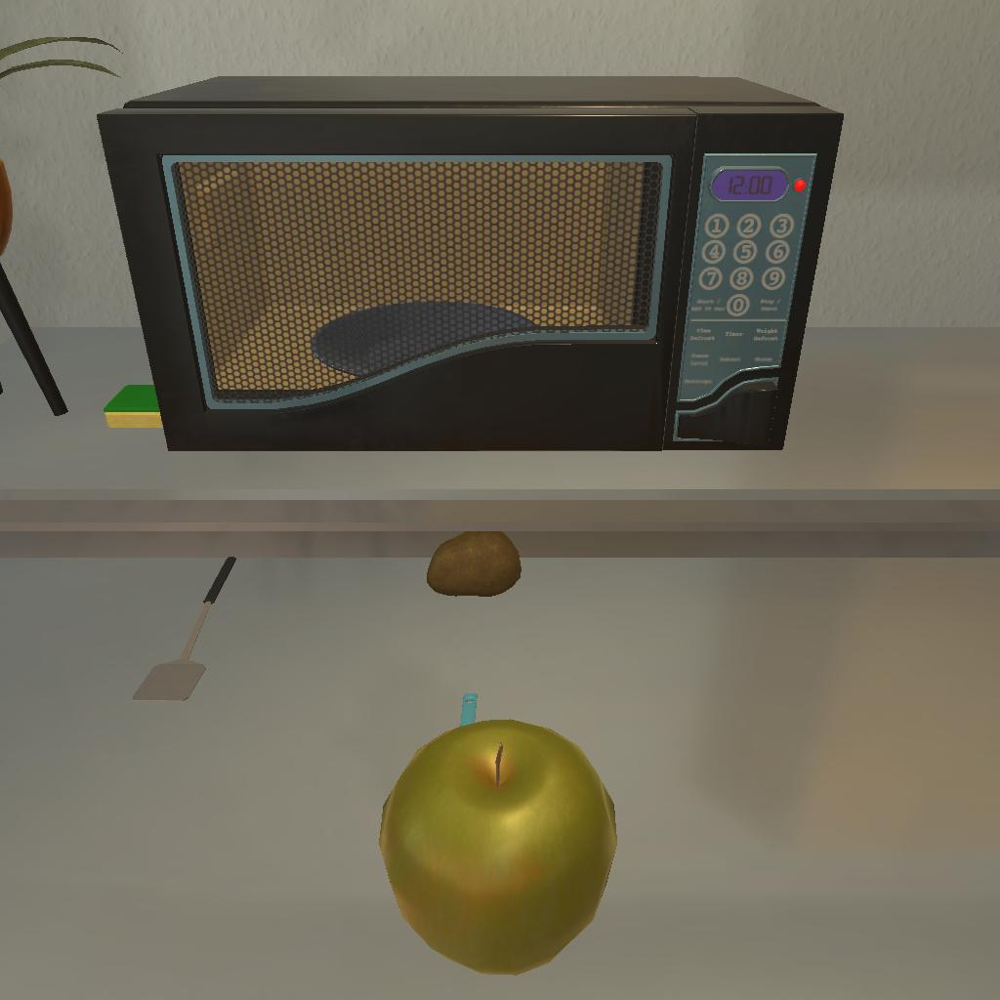

---------------------------------------------------------task: 20---------------------------------------------------------
--------------------------------------------------------------------------------------------------------------------------------------------------------------------
--------------------------------------------------------------------------------------------------------------------------------------------------------------------
Step:--------------------------------------------------------------------------6-------------------------------------------------------------------------------
----------------------------------------
VLM Prompt:
**Task**
Please perform as an embodied AI agent. Our final objective is to heat some apple and put it in garbagecan. Below is the plan for completing the task, the current observation, alongside historical data and admissible actions for the next step. Please determine the best action for the next step!
**Plan**
Below is a detailed step-by-step plan to complete the task.
1. Find an apple.
2. Pick up the apple.
3. Find a microwave.
4. Heat the apple with the microwave.
5. Find a garbage can.
6. Place the heated apple in the garbage can.
**Current Observation**
Displayed is an image capturing the current position of the agent.
Objects in The Image: ['microwave', 'apple', 'kiwi', 'spatula']
**History Information**
Displayed are the previous observations with their corresponding actions.
State 0:
No history.
State 1:
1. Step Index in the Plan: 1
2. Objects: Apple, Kiwi, Fork, Sink, Knife, Cutting Board
3. Action: pick up the apple
State 2:
1. Step Index in the Plan: 2
2. Objects: Cabinet Doors, Wall, Ceiling
3. Action: go to microwave 1
State 3:
1. Step Index in the Plan: 4
2. Objects: Microwave, Potato, Lemon, Spatula, Ladle
3. Action: open microwave 1
State 4:
1. Step Index in the Plan: 4
2. Objects: Microwave (open), Plate (inside microwave), Apple (not visible)
3. Action: close microwave 1
State 5:
1. Step Index in the Plan: 4
2. Objects: Microwave, Spatula, Kiwis, Ladle
3. Action: take apple 1 from microwave 1
**Admissible Actions**
(1): go to cabinet 1
(2): go to cabinet 2
(3): go to countertop 1
(4): go to cabinet 3
(5): go to cabinet 4
(6): go to cabinet 5
(7): go to sink 1
(8): go to cabinet 6
(9): go to drawer 1
(10): go to drawer 2
(11): go to sinkbasin 1
(12): go to cabinet 7
(13): go to cabinet 8
(14): go to coffeemachine 1
(15): go to cabinet 9
(16): go to countertop 2
(17): go to cabinet 10
(18): go to drawer 3
(19): go to drawer 4
(20): go to garbagecan 1
(21): go to drawer 5
(22): go to cabinet 11
(23): go to cabinet 12
(24): go to cabinet 13
(25): go to cabinet 14
(26): go to stoveburner 1
(27): go to countertop 3
(28): go to stoveburner 2
(29): go to stoveburner 3
(30): go to stoveburner 4
(31): go to drawer 6
(32): go to cabinet 15
(33): go to cabinet 16
(34): go to cabinet 17
(35): go to cabinet 18
(36): go to toaster 1
(37): go to drawer 7
(38): go to countertop 4
(39): go to fridge 1
(40): put apple 1 in/on microwave 1
(41): heat apple 1 with microwave 1
(42): examine apple 1
**Analysis Guideline**
1. Analyze the history and current observation, and then determine our current step in the plan and our current place.
2. List all visible objects related to the task in the current observation, without summarizing any as "various items."
3. Analyze the objects in the current observation based on the history and the requirements for the current step, and then determine if we can complete the step with the current observation.
4. Analyze and decide on the most appropriate action to take.
5. Summarize the analysis using the following format: "Analysis: [The summarization of the analysis], The Most Appropriate Action: (i which is the integer.): [Selected action]"
**Notes**
1. We must complete each step of the plan in order and cannot skip steps when the previous ones are not finished.
2. For "Go to" actions listed as "go to xxx [n]", interpret this as there are n distinct actions available: "go to xxx 1", "go to xxx 2", ..., "go to xxx n". Select one specific action from these options instead of using "go to xxx [n]".
3. If receptacles such as drawers, cabinets, and so forth are closed in the current observation, we may try to open them.
4. Pay attention to synonyms and ensure clarity in the terms used.
5. We must determine and provide the single action which must be in the **Admissible Actions**.
6. If there is no history available, we are at the first step and the current place is "Unknown".
**Answer**
Please select the most suitable action by following the **Analysis Guideline**, keeping the above **Notes** in mind.
----------------------------------------
----------------------------------------
VLM Response:
Analysis: The current step in the plan is to heat the apple with the microwave (Step 4). We know from history that the apple has already been picked up and placed in the microwave, and the microwave door has been closed. The current observation shows a microwave displaying "2:00" on its timer, which likely indicates that the apple inside has been heated for two minutes, or is set to be heated for that duration. There is no action required to go to any location since we are already at the microwave, as indicated by its presence in the image. The visible objects related to the task in the current observation are the microwave, the apple (presumably inside the microwave), and a spatula which is not pertinent to the current step. Based on the history and the current observation, it is likely that the apple has been heated as the microwave door is closed, and the timer is showing a duration. The next logical action would be to confirm that the apple has been heated.
The Most Appropriate Action: (41): heat apple 1 with microwave 1
This action is chosen to ensure that the apple is being heated as per the plan, even though the microwave timer suggests that the apple may already be heated or is set to be heated. If the apple has already been heated, this action should confirm the completion of Step 4.
----------------------------------------
----------------------------------------
>>> Refine VLM Response and Get Pure Action: heat apple 1 with microwave 1
This action is chosen to ensure that the apple is being heated as per the plan, even though the microwave timer suggests that the apple may already be heated or is set to be heated
----------------------------------------
-----------------------------------------------------------------
Running time: 11.395729303359985 seconds
Total Money: 0
-----------------------------------------------------------------
-----------------------------------------------------------------
Summarization Prompt:
**Context**
Analysis: Since there is no history information, we are at the first step in the plan, which is to find a statue. The current place is unknown. In the current observation, we see a floorlamp next to an armchair with a small table that has a small object on it, which could potentially be the statue we are looking for. Since the plan requires us to find a statue first and it appears there might be one on the table next to the armchair, we should investigate this object to determine if it is the statue we need.
The Most Appropriate Action: (1): go to armchair 1
**Summary**
1. Step Index in the Plan: 1
2. Objects: Floorlamp, Armchair, Small Table, Small Object (potential statue)
3. Action: go to armchair 1
**Context**
Analysis: The current step in the plan is to heat the apple with the microwave (Step 4). We know from history that the apple has already been picked up and placed in the microwave, and the microwave door has been closed. The current observation shows a microwave displaying "2:00" on its timer, which likely indicates that the apple inside has been heated for two minutes, or is set to be heated for that duration. There is no action required to go to any location since we are already at the microwave, as indicated by its presence in the image. The visible objects related to the task in the current observation are the microwave, the apple (presumably inside the microwave), and a spatula which is not pertinent to the current step. Based on the history and the current observation, it is likely that the apple has been heated as the microwave door is closed, and the timer is showing a duration. The next logical action would be to confirm that the apple has been heated.
The Most Appropriate Action: (41): heat apple 1 with microwave 1
This action is chosen to ensure that the apple is being heated as per the plan, even though the microwave timer suggests that the apple may already be heated or is set to be heated. If the apple has already been heated, this action should confirm the completion of Step 4.
Please summarize the context by following above examples when providing the summary, and ensure that only the summary is included, without any extra explanation.
**Summary**
-----------------------------------------------------------------
-----------------------------------------------------------------
Summarization Response:
Step Index in the Plan: 4
Objects: Microwave, Apple (inside microwave), Spatula
Action: heat apple 1 with microwave 1
-----------------------------------------------------------------
-----------------------------------------------------------------
Text Observation:Nothing happens.
-----------------------------------------------------------------
UNSUCCEED